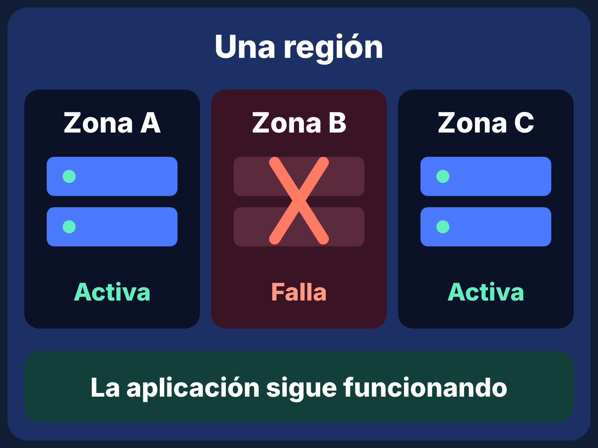

Lo que debes entender antes de programar en la nube
Programar en la nube es escribir software que se ejecuta, se almacena y se escala sobre recursos que pertenecen a un proveedor y que consumes a través de internet.
Las 5 características esenciales
Según el NIST, un servicio solo es «nube» si cumple estas cinco propiedades.
Autoservicio bajo demanda
Creas servidores o bases de datos tú mismo desde una consola o API, sin llamar a nadie.
Amplio acceso por red
Los recursos se usan desde cualquier dispositivo con internet: portátil, móvil o servidor.
Agrupación de recursos
El proveedor comparte su hardware entre muchos clientes, aislándolos entre sí.
Elasticidad rápida
Los recursos crecen o se reducen en minutos, incluso de forma automática.
Servicio medido
Se mide el consumo y se factura por uso: horas de cómputo, GB almacenados, datos transferidos.
Virtualización y contenedores
Un servidor físico muy potente se divide en muchas máquinas virtuales gracias a un hipervisor. Cada cliente cree tener su propia máquina, aunque comparte el hardware con otros.
Los contenedores van un paso más allá: empaquetan solo la aplicación y sus dependencias, y comparten el núcleo del sistema operativo. Arrancan en segundos y consumen menos recursos que una VM.
- VM: aislamiento fuerte, sistema operativo completo, arranque en minutos.
- Contenedor: ligero y portable, ideal para microservicios.
- Función serverless: código que corre solo cuando llega un evento.

Modelo de responsabilidad compartida
El proveedor protege la nube, tú proteges lo que pones en la nube. Confundir esta frontera es una de las causas más comunes de filtraciones de datos.
| Elemento | Proveedor | Cliente |
|---|---|---|
| Centros de datos y hardware | Sí | No |
| Virtualización y red base | Sí | No |
| Sistema operativo de tus VM (IaaS) | No | Sí |
| Configuración de permisos y accesos | No | Sí |
| Tus datos y su cifrado | No | Sí |
| Código de tu aplicación | No | Sí |
Ventajas y retos
Ventajas
- Sin inversión inicial en hardware.
- Escalado rápido según la demanda.
- Alcance global y alta disponibilidad.
- Acceso a servicios avanzados (IA, analítica, IoT).
- Menos tareas de mantenimiento.
Retos
- Costos que crecen si no se monitorean.
- Dependencia del proveedor (vendor lock-in).
- Seguridad mal configurada por el cliente.
- Necesidad de conexión a internet estable.
- Cumplimiento normativo sobre dónde residen los datos.
Glosario
Escribe una palabra para filtrar los términos.
- Elasticidad
- Capacidad de aumentar o reducir recursos automáticamente según la demanda.
- Escalabilidad
- Habilidad de un sistema para manejar más carga, ya sea vertical (más potencia) u horizontal (más instancias).
- Región
- Ubicación geográfica que agrupa varios centros de datos del proveedor.
- Zona de disponibilidad (AZ)
- Centro de datos o grupo aislado dentro de una región, con energía y red propias.
- Máquina virtual (VM)
- Computadora simulada por software que corre sobre hardware compartido.
- Contenedor
- Paquete ligero que incluye la aplicación y sus dependencias; comparte el núcleo del sistema operativo.
- Serverless
- Modelo en el que el proveedor gestiona los servidores y tú solo despliegas código o funciones.
- FaaS
- Functions as a Service: ejecutas funciones individuales en respuesta a eventos.
- IAM
- Gestión de identidades y accesos: define quién puede hacer qué sobre cada recurso.
- CDN
- Red de distribución de contenido: copias de tus archivos en servidores cercanos al usuario.
- Balanceador de carga
- Reparte las peticiones entre varias instancias para evitar sobrecargas.
- Latencia
- Tiempo que tarda un dato en viajar entre el usuario y el servidor.
- SLA
- Acuerdo de nivel de servicio: compromiso de disponibilidad que ofrece el proveedor.
- Infraestructura como código (IaC)
- Definir y crear la infraestructura con archivos de texto versionables, no con clics.
- CI/CD
- Integración y entrega continuas: automatizar pruebas y despliegues cada vez que cambia el código.
- Multicloud
- Usar servicios de más de un proveedor de nube al mismo tiempo.
Preguntas rápidas
¿Nube y hosting tradicional son lo mismo?
No. El hosting suele ser un plan fijo en un servidor. La nube ofrece recursos elásticos, facturados por uso y administrables por API.
¿Es la nube siempre más barata?
No necesariamente. Es más barata cuando la demanda varía o apenas empiezas. Una carga estable y muy grande puede costar menos en infraestructura propia; por eso conviene medir y comparar.
¿Mis datos están seguros en la nube?
Los proveedores invierten mucho en seguridad física y de red, pero la configuración de accesos y cifrado depende de ti (responsabilidad compartida).
¿Necesito saber administrar servidores para empezar?
No. Con PaaS o serverless puedes desplegar código sin tocar servidores. Aun así, entender cómo funcionan te ayuda a diseñar mejor.